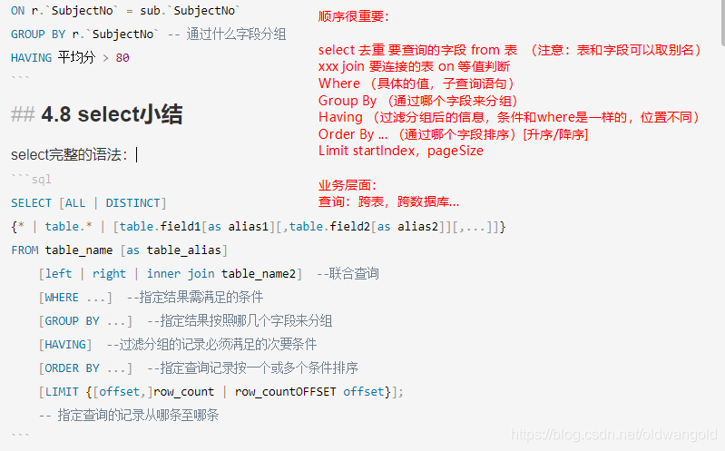
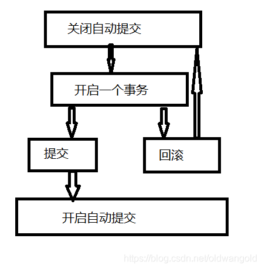
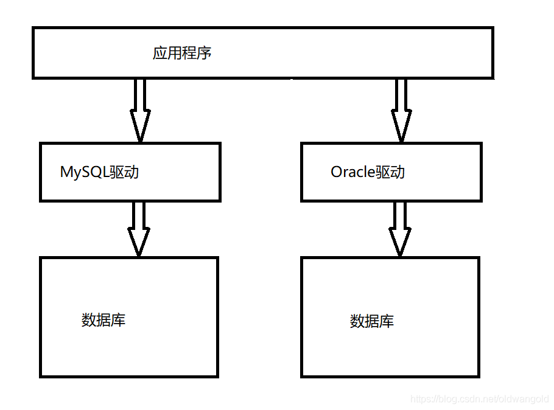
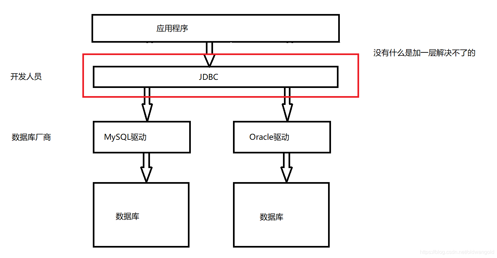

# mySQL 基本操作
# 初识数据库
# 什么是数据库
数据库 (DB，DataBase)
概念：数据仓库，软件，安装在操作系统 (window ,linux, mac、.... 之上)
SQL，可以存储大量的数据。500 万！
作用：存储数据，管理数据
# 数据库的分类
关系型数据库: (SQL)
- MySQL，Oracle，Sql Server,DB2,SQLlite
- 通过表和表之间，行和列之间的关系进行数据的存储，学员信息表，考勤表，..
非关系型数据库: (NoSQL) Not Only
- Redis，MongDB
- 非关系型数据库，对象存储，通过对象的自身的属性来决定。
DBMS (数据库管理系统)
- 数据库的管理软件，科学有效的管理我们的数据。维护和获取数据；
- MySQL，数据库管理系统！
# 基本命令行操作
mysql -root -p -- 链接数据库 | |
show databases -- 查看所有数据库 | |
use {database}; -- 切换数据库 | |
show tables; -- 查看数据库中所有的表 | |
discribe {table} -- 查看数据库中表的信息 | |
create database {database}; -- 创建一个数据库 | |
exit; -- 退出连接 | |
-- 单行注释 | |
/* | |
多 | |
行 | |
注 | |
释 | |
*/ |
数据库 xxx 语言 CRUD 增删改查
- DDL 定义
- DML 操作
- DQL 查询
- DCL 控制
# 操作数据库
创建:
CREATE DATABASE [IF NOT EXISTS] demo; |
删除:
DROP DATABASE [IF EXISTS] demo; |
使用:
USE demo; | |
-- tab 键的上面，如果你的表名或者字段名是一个特殊字符 (SQL 保留字符)，就需要带 '' |
查看:
SHOW DATABASES; |
# 数据库的列类型
数值
| 名称 | 字节数 |
|---|---|
| tinyint | 1 |
| smallint | 2 |
| mediumint | 3 |
| int (设定最大宽度，若有 0 填充则会填充 0, 跟储存大小无关) | 4 |
| bigint | 8 |
| float | 4 |
| double | 8 |
| decimal | 字符串形式的浮点数 (金融中需要精度时使用) |
字符串
| 名称 | 范围 | 用途 |
|---|---|---|
| char | 0-255 | 字符串固定大小 |
| varchar | 0-65535 | 可变字符串 |
| tinytext | 2^8-1 | 微型文本 |
| text | 2^16-1 | 文本串 |
时间日期
| 名称 | 格式 |
|---|---|
| date | YYYY-MM-DD |
| time | HH:mm:ss |
| datetime | YYYY-MM-DD HH:mm:ss |
| timestamp | 时间戳 |
| year | YYYY |
null
- 没有值，未知
- 注意，不要使用 NULL 进行运算，结果为 NULL
# 数据库的字段属性
Unsigned :
- 无符号的整数
- 声明了该列不能声明为负数
zerofill :
- 0 填充的
- 不足的位数，使用 0 来填充，int (3) , 5 --- 005
自增:
- 通常理解为自增，自动在上一条记录的基础上 + 1 (默认)
- 通常用来设计唯一的主键～index，必须是整数类型
- 可以自定义设计主键自增的起始值和步长
非空 NUll not null
- 假设设置为 not null ，如果不给它赋值，就会报错！
- NUII，如果不填写值，默认就是 null !
默认:
- 设置默认的值！
- sex，默认值为男，如果不指定该列的值，则会有默认的值！
# 创建表
USE demo; | |
CREATE TABLE IF NOT EXISTS `student` ( | |
`id` INT(4) NOT NULL AUTO_INCREMENT COMMENT '学号', | |
`name` VARCHAR(30) NOT NULL DEFAULT '匿名' COMMENT '姓名', | |
`pwd` VARCHAR(20) NOT NULL DEFAULT '123456' COMMENT '密码', | |
`sex` VARCHAR(2) NOT NULL DEFAULT '未知' COMMENT '性别', | |
`birthday` DATETIME DEFAULT NULL COMMENT '出生日期', | |
PRIMARY KEY(`id`) | |
)ENGINE=INNODB DEFAULT CHARSET=utf8 |

# 数据表的类型
- INNODB 默认使用 安全性高 事务处理 多表多用户操作
- MYISAM 早期使用 节约空间 速度较快
| MYISAM | INNODB | |
|---|---|---|
| 事务支持 | 不支持 | 支持 |
| 数据行锁定 | 不支持 | 支持 |
| 外键约束 | 不支持 | 支持 |
| 全文索引 | 支持 | 不支持 |
| 表空间大小 | 较小 | 较大，约为两倍 |
在物理空间存在的位置
本质还是文件的存储
MySQL 引擎在物理文件上的区别:
- lnnoDB
- 在数据库表中只有一个 *.frm 文件，以及上级目录下的 ibdata1 文件.
- MYISAM 对应文件
- *.frm 表结构的定义文件。
- *.MYD 数据文件 (data)。
- *.MYI 索引文件 (index)。
设置数据库表的字符集编码
CHARSET=utf8 |
# 修改删除表
修改
-- 修改表的名字: ALTER TABLE 表名 RENAME AS 新表名 | |
ALTER TABLE student RENAME AS student1; | |
/* | |
modify 不能用来字段重命名，只能修改字段类型和约束条件。 | |
change 可以用来字段重命名，可以用来修改字段类型和约束条件。 | |
*/ | |
-- 修改表的字段（表的约束修改） | |
-- ALTER TABLE 表名 MODIFY 字段名 列属性； | |
ALTER TABLE student MODIFY age VARCHAR(3); | |
-- 修改表的字段（表的重命名，表的约束修改） | |
-- ALTER TABLE 表名 CHANGE 字段名 新字段名 列属性； | |
ALTER TABLE student CHANGE age age1 INT(3); | |
-- 增加表的字段: ALTER TABLE 表名 ADD 字段名 列属性； | |
ALTER TABLE student ADD age INT(3); |
删除
-- 删除表的字段: ALTER TABLE 表名 DROP 字段名； | |
ALTER TABLE student DROP age; | |
-- 删除表: DROP TABLE [IF EXISTS] 表名； | |
DROP TABLE IF EXISTS student; |
所有的创建和删除操作尽量加上判断
注意:
- 字段名使用 `` 包裹
- 注释 -- /**/
- sql 关键字大小写不敏感，推荐使用小写
# mySQL 数据管理
# 外键
方式一、在创建表的时候，增加约束（麻烦，比较复杂）
CREATE TABLE `grade` ( | |
`gradeid` INT(10) NOT NULL AUTO_INCREMENT COMMENT '年级', | |
`gradename` VARCHAR(50) NOT NULL COMMENT '年级名称', | |
PRIMARY KEY(`gradeid`) | |
)ENGINE=INNODB DEFAULT CHARSET=utf8 | |
-- 学生表的 gradeid 字段，要去引用年级表的 gradeid | |
-- 定义外键 key | |
-- 给这个外键添加约束（执行引用） reference | |
CREATE TABLE IF NOT EXISTS `student`( | |
`id` INT(4) NOT NULL AUTO_INCREMENT COMMENT '学号', | |
`name` VARCHAR (30) NOT NULL DEFAULT '匿名' COMMENT '姓名', | |
`pwd` VARCHAR(20) NOT NULL DEFAULT '123456' COMMENT '密码', | |
`sex` VARCHAR(2) NOT NULL DEFAULT '女' COMMENT '性别', | |
`birthday` DATETIME DEFAULT NULL COMMENT '出生日期', | |
`gradeid` INT(10) NOT NULL COMMENT '学生的年级', | |
`address` VARCHAR(100) DEFAULT NULL COMMENT '家庭住址', | |
`email` VARCHAR(50) DEFAULT NULL COMMENT '邮箱', | |
PRIMARY KEY(`id`), | |
KEY `FK_gradeid` (`gradeid`), | |
CONSTRAINT `FK_gradeid` FOREIGN KEY (`gradeid`) REFERENCES `grade`(`gradeid`) | |
)ENGINE=INNODB DEFAULT CHARSET=utf8 |
删除有外键关系的表的时候，必须先删除引用别人的表（从表），再删除被引用的表（主表）。
方式二：创建表成功后，添加外键约束
CREATE TABLE `grade` ( | |
`gradeid` INT(10) NOT NULL AUTO_INCREMENT COMMENT '年级', | |
`gradename` VARCHAR(50) NOT NULL COMMENT '年级名称', | |
PRIMARY KEY(`gradeid`) | |
)ENGINE=INNODB DEFAULT CHARSET=utf8 | |
-- 学生表的 gradeid 字段，要去引用年级表的 gradeid | |
-- 定义外键 key | |
-- 给这个外键添加约束（执行引用） reference | |
CREATE TABLE IF NOT EXISTS `student`( | |
`id` INT(4) NOT NULL AUTO_INCREMENT COMMENT '学号', | |
`name` VARCHAR (30) NOT NULL DEFAULT '匿名' COMMENT '姓名', | |
`pwd` VARCHAR(20) NOT NULL DEFAULT '123456' COMMENT '密码', | |
`sex` VARCHAR(2) NOT NULL DEFAULT '女' COMMENT '性别', | |
`birthday` DATETIME DEFAULT NULL COMMENT '出生日期', | |
`gradeid` INT(10) NOT NULL COMMENT '学生的年级', | |
`address` VARCHAR(100) DEFAULT NULL COMMENT '家庭住址', | |
`email` VARCHAR(50) DEFAULT NULL COMMENT '邮箱', | |
PRIMARY KEY(`id`) | |
)ENGINE=INNODB DEFAULT CHARSET=utf8 | |
-- 创建表的时候没有外键关系 | |
ALTER TABLE `student` | |
ADD CONSTRAINT `FK_gradeid` FOREIGN KEY(`gradeid`) REFERENCES `grade`(`gradeid`); | |
-- ALTER TABLE 表 ADD CONSTRAINT 约束名 FOREIGN KEY (作为外键的列) REFERENCES 哪个表 (哪个字段); |
以上的操作，都是物理外键，即数据库级别的外键，不建议使用！（避免数据库过多，造成困扰，了解即可～）
最佳实践:
- 数据库就是单纯的表，只用来存数据，只有行（数据）和列（字段）
- 我们想使用多张表的数据，想使用外键（程序去实现）
# DML 语言
数据库意义：数据存储，数据管理
DML 语言：数据操作语言
- Insert
- update
- delete
# 添加
insert
-- 插入语句（添加） | |
-- insert into 表名 ([字段名 1, 字段 2, 字段 3]) values (' 值 1'),(' 值 2'),(' 值 3'),(...) | |
INSERT INTO `grade`(`gradename`) VALUES('大四') | |
-- 由于主键自增，可以省略主键（如果不写表的字段，它就会一一匹配） | |
INSERT INTO `grade` VALUES('大三') | |
-- INSERT INTO `grade`(`gardeid`,`gradename`) VALUES (' 大三 ',null) | |
-- 一般写插入语句，我们一定要数据和字段一一对应！ | |
-- 插入多个字段 | |
INSERT INTO `grade`(`gradename`) VALUES ('大二'),('大一') | |
INSERT INTO `student`(`name`) VALUES('张三') | |
INSERT INTO `student`(`name`,`pwd`,`sex`) VALUES('张三','aaaaaaaaaa','男') | |
INSERT INTO `student`(`name`,`pwd`,`sex`) | |
VALUES('李四','aaaaaaaaaa','男'),('王五','aaaaaaaaaa','男') |
语法：
insert into 表名([字段名1,字段2,字段3]) values('值1'),('值2'),('值3'),(...)
注意事项：
- 字段和字段之间使用 英文逗号 隔开
- 字段是可以省略的，但是后面的值必须要一一对应，不能少
- 可以同时插入多条数据，VALUES 后面的值，需要使用，隔开即可 values (),(),...
# 修改
update 修改谁（条件） set 原来的值 = 新值
-- 修改学员的名字 | |
UPDATE `student` SET `name`='laowang' WHERE id = 1 | |
-- 不指定条件的情况下，会改动所有表 | |
UPDATE `student` SET `name`='海角七号' | |
-- 修改多个属性，逗号隔开 | |
UPDATE `student` SET `name` = 'oldwang',`email`='123@164.com' WHERE id=1 | |
-- 语法 | |
-- UPDATE 表名 SET column_name=value,[column_name=value,...] WHERE [条件] |
条件：where 字句，运算符 id 等于某个值，大于某个值，在某个区间修改
操作符会返回布尔值
操作符:
| 操作符 | 含义 | 范围 | 结果 |
|---|---|---|---|
| = | 等于 | 5=6 | false |
| <> 或！= | 不等于 | 5<>6 | true |
| > | |||
| < | |||
| <= | |||
| >= | |||
| BETWEEN … AND … | 在某个范围内 | [2,5] | |
| AND | 与 && | 5>1 and 1>2 | false |
| OR | 或 | 5>1 or 1>2 | true |
-- 通过多个条件定位数据，无上限！ | |
UPDATE `student` SET `name`='jackie' WHERE `name`='oldwang' AND sex = '女' |
语法： UPDATE 表名 SET column_name=value,[column_name=value,...] WHERE [条件]
注意：
- column_name 是数据库的列，尽量带上 ``
- 条件，筛选的条件，如果没有指定，则会修改所有的列
- value，是一个具体的值，也可以是一个变量
- 多个设置的属性之间，使用英文逗号隔开
UPDATE `student` SET `birthday` = CURRENT_TIME WHERE `name`='jackie' AND sex = '女' |
# 删除
delete 命令
语法：delete from 表名 [where 条件]
-- 删除数据（避免这样写，会全部删除） | |
DELETE FROM `student` | |
-- 删除指定数据 | |
DELETE FROM `student` WHERE id = 1 |
TRUNCATE
作用：完全清空一个数据库，表的结构和索引约束不会变！
-- 清空 student 表 | |
TRUNCATE `student` |
delete 和 TRUNCATE 区别
相同点：
- 都能删除数据，都不会删除表结构
不同点：
- TRUNCATE 重现设置自增列，计数器会归零
- TRUNCATE 不会影响事务
-- 测试 delete 和 TRUNCATE 区别 | |
CREATE TABLE `test` ( | |
`id` INT(4) NOT NULL AUTO_INCREMENT, | |
`colu` VARCHAR(20) NOT NULL, | |
PRIMARY KEY(`id`) | |
)ENGINE=INNODB DEFAULT CHARSET=utf8 | |
INSERT INTO `test`(`colu`) VALUES('1'),('2'),('3') | |
DELETE FROM `test` -- 不会影响自增 | |
TRUNCATE TABLE `test` -- 自增会归零 |
了解即可：delete 删除的问题，重启数据库，现象
InnoDB 自增列会从 1 开始（存在内存中，断电即失）
MyISAM 继续从上一个自增量开始（存在文件中，不会丢失）
# DQL 查询数据 (重点)
# DQL
（Data Query Language：数据查询语言）
- 所有的查询操作都用它 select
- 简单的查询，复杂的查询它都可以做
- 数据库中最核心的语言，最重要的语言
- 使用频率最高的语言
SELECT 语法：
SELECT [ALL | DISTINCT] | |
{* | table.* | [table.field1[as alias1][,table.field2[as alias2]][,...]]} | |
FROM table_name [as table_alias] | |
[left | right | inner join table_name2] -- 联合查询 | |
[WHERE ...] -- 指定结果需满足的条件 | |
[GROUP BY ...] -- 指定结果按照哪几个字段来分组 | |
[HAVING] -- 过滤分组的记录必须满足的次要条件 | |
[ORDER BY ...] -- 指定查询记录按一个或多个条件排序 | |
[LIMIT {[offset,]row_count | row_countOFFSET offset}]; | |
-- 指定查询的记录从哪条至哪条 |
4.2 指定查询字段
素材所用 sql（from：https://www.cnblogs.com/hellokuangshen/p/10252711.html）：
/* | |
SQLyog Ultimate v10.00 Beta1 | |
MySQL - 5.7.19 : Database - school | |
********************************************************************* | |
*/ | |
/*!40101 SET NAMES utf8 */; | |
/*!40101 SET SQL_MODE=''*/; | |
/*!40014 SET @OLD_UNIQUE_CHECKS=@@UNIQUE_CHECKS, UNIQUE_CHECKS=0 */; | |
/*!40014 SET @OLD_FOREIGN_KEY_CHECKS=@@FOREIGN_KEY_CHECKS, FOREIGN_KEY_CHECKS=0 */; | |
/*!40101 SET @OLD_SQL_MODE=@@SQL_MODE, SQL_MODE='NO_AUTO_VALUE_ON_ZERO' */; | |
/*!40111 SET @OLD_SQL_NOTES=@@SQL_NOTES, SQL_NOTES=0 */; | |
CREATE DATABASE /*!32312 IF NOT EXISTS*/`school` /*!40100 DEFAULT CHARACTER SET utf8 */; | |
USE `school`; | |
/*Table structure for table `grade` */ | |
DROP TABLE IF EXISTS `grade`; | |
CREATE TABLE `grade` ( | |
`GradeID` INT(11) NOT NULL AUTO_INCREMENT COMMENT '年级编号', | |
`GradeName` VARCHAR(50) NOT NULL COMMENT '年级名称', | |
PRIMARY KEY (`GradeID`) | |
) ENGINE=INNODB AUTO_INCREMENT=6 DEFAULT CHARSET=utf8; | |
/*Data for the table `grade` */ | |
INSERT INTO `grade`(`GradeID`,`GradeName`) VALUES (1,'大一'),(2,'大二'),(3,'大三'),(4,'大四'),(5,'预科班'); | |
/*Table structure for table `result` */ | |
DROP TABLE IF EXISTS `result`; | |
CREATE TABLE `result` ( | |
`StudentNo` INT(4) NOT NULL COMMENT '学号', | |
`SubjectNo` INT(4) NOT NULL COMMENT '课程编号', | |
`ExamDate` DATETIME NOT NULL COMMENT '考试日期', | |
`StudentResult` INT(4) NOT NULL COMMENT '考试成绩', | |
KEY `SubjectNo` (`SubjectNo`) | |
) ENGINE=INNODB DEFAULT CHARSET=utf8; | |
/*Data for the table `result` */ | |
INSERT INTO `result`(`StudentNo`,`SubjectNo`,`ExamDate`,`StudentResult`) VALUES (1000,1,'2013-11-11 16:00:00',94),(1000,2,'2012-11-10 10:00:00',75),(1000,3,'2011-12-19 10:00:00',76),(1000,4,'2010-11-18 11:00:00',93),(1000,5,'2013-11-11 14:00:00',97),(1000,6,'2012-09-13 15:00:00',87),(1000,7,'2011-10-16 16:00:00',79),(1000,8,'2010-11-11 16:00:00',74),(1000,9,'2013-11-21 10:00:00',69),(1000,10,'2012-11-11 12:00:00',78),(1000,11,'2011-11-11 14:00:00',66),(1000,12,'2010-11-11 15:00:00',82),(1000,13,'2013-11-11 14:00:00',94),(1000,14,'2012-11-11 15:00:00',98),(1000,15,'2011-12-11 10:00:00',70),(1000,16,'2010-09-11 10:00:00',74),(1001,1,'2013-11-11 16:00:00',76),(1001,2,'2012-11-10 10:00:00',93),(1001,3,'2011-12-19 10:00:00',65),(1001,4,'2010-11-18 11:00:00',71),(1001,5,'2013-11-11 14:00:00',98),(1001,6,'2012-09-13 15:00:00',74),(1001,7,'2011-10-16 16:00:00',85),(1001,8,'2010-11-11 16:00:00',69),(1001,9,'2013-11-21 10:00:00',63),(1001,10,'2012-11-11 12:00:00',70),(1001,11,'2011-11-11 14:00:00',62),(1001,12,'2010-11-11 15:00:00',90),(1001,13,'2013-11-11 14:00:00',97),(1001,14,'2012-11-11 15:00:00',89),(1001,15,'2011-12-11 10:00:00',72),(1001,16,'2010-09-11 10:00:00',90),(1002,1,'2013-11-11 16:00:00',61),(1002,2,'2012-11-10 10:00:00',80),(1002,3,'2011-12-19 10:00:00',89),(1002,4,'2010-11-18 11:00:00',88),(1002,5,'2013-11-11 14:00:00',82),(1002,6,'2012-09-13 15:00:00',91),(1002,7,'2011-10-16 16:00:00',63),(1002,8,'2010-11-11 16:00:00',84),(1002,9,'2013-11-21 10:00:00',60),(1002,10,'2012-11-11 12:00:00',71),(1002,11,'2011-11-11 14:00:00',93),(1002,12,'2010-11-11 15:00:00',96),(1002,13,'2013-11-11 14:00:00',83),(1002,14,'2012-11-11 15:00:00',69),(1002,15,'2011-12-11 10:00:00',89),(1002,16,'2010-09-11 10:00:00',83),(1003,1,'2013-11-11 16:00:00',91),(1003,2,'2012-11-10 10:00:00',75),(1003,3,'2011-12-19 10:00:00',65),(1003,4,'2010-11-18 11:00:00',63),(1003,5,'2013-11-11 14:00:00',90),(1003,6,'2012-09-13 15:00:00',96),(1003,7,'2011-10-16 16:00:00',97),(1003,8,'2010-11-11 16:00:00',77),(1003,9,'2013-11-21 10:00:00',62),(1003,10,'2012-11-11 12:00:00',81),(1003,11,'2011-11-11 14:00:00',76),(1003,12,'2010-11-11 15:00:00',61),(1003,13,'2013-11-11 14:00:00',93),(1003,14,'2012-11-11 15:00:00',79),(1003,15,'2011-12-11 10:00:00',78),(1003,16,'2010-09-11 10:00:00',96),(1004,1,'2013-11-11 16:00:00',84),(1004,2,'2012-11-10 10:00:00',79),(1004,3,'2011-12-19 10:00:00',76),(1004,4,'2010-11-18 11:00:00',78),(1004,5,'2013-11-11 14:00:00',81),(1004,6,'2012-09-13 15:00:00',90),(1004,7,'2011-10-16 16:00:00',63),(1004,8,'2010-11-11 16:00:00',89),(1004,9,'2013-11-21 10:00:00',67),(1004,10,'2012-11-11 12:00:00',100),(1004,11,'2011-11-11 14:00:00',94),(1004,12,'2010-11-11 15:00:00',65),(1004,13,'2013-11-11 14:00:00',86),(1004,14,'2012-11-11 15:00:00',77),(1004,15,'2011-12-11 10:00:00',82),(1004,16,'2010-09-11 10:00:00',87),(1005,1,'2013-11-11 16:00:00',82),(1005,2,'2012-11-10 10:00:00',92),(1005,3,'2011-12-19 10:00:00',80),(1005,4,'2010-11-18 11:00:00',92),(1005,5,'2013-11-11 14:00:00',97),(1005,6,'2012-09-13 15:00:00',72),(1005,7,'2011-10-16 16:00:00',84),(1005,8,'2010-11-11 16:00:00',79),(1005,9,'2013-11-21 10:00:00',76),(1005,10,'2012-11-11 12:00:00',87),(1005,11,'2011-11-11 14:00:00',65),(1005,12,'2010-11-11 15:00:00',67),(1005,13,'2013-11-11 14:00:00',63),(1005,14,'2012-11-11 15:00:00',64),(1005,15,'2011-12-11 10:00:00',99),(1005,16,'2010-09-11 10:00:00',97),(1006,1,'2013-11-11 16:00:00',82),(1006,2,'2012-11-10 10:00:00',73),(1006,3,'2011-12-19 10:00:00',79),(1006,4,'2010-11-18 11:00:00',63),(1006,5,'2013-11-11 14:00:00',97),(1006,6,'2012-09-13 15:00:00',83),(1006,7,'2011-10-16 16:00:00',78),(1006,8,'2010-11-11 16:00:00',88),(1006,9,'2013-11-21 10:00:00',89),(1006,10,'2012-11-11 12:00:00',82),(1006,11,'2011-11-11 14:00:00',70),(1006,12,'2010-11-11 15:00:00',69),(1006,13,'2013-11-11 14:00:00',64),(1006,14,'2012-11-11 15:00:00',80),(1006,15,'2011-12-11 10:00:00',90),(1006,16,'2010-09-11 10:00:00',85),(1007,1,'2013-11-11 16:00:00',87),(1007,2,'2012-11-10 10:00:00',63),(1007,3,'2011-12-19 10:00:00',70),(1007,4,'2010-11-18 11:00:00',74),(1007,5,'2013-11-11 14:00:00',79),(1007,6,'2012-09-13 15:00:00',83),(1007,7,'2011-10-16 16:00:00',86),(1007,8,'2010-11-11 16:00:00',76),(1007,9,'2013-11-21 10:00:00',65),(1007,10,'2012-11-11 12:00:00',87),(1007,11,'2011-11-11 14:00:00',69),(1007,12,'2010-11-11 15:00:00',69),(1007,13,'2013-11-11 14:00:00',90),(1007,14,'2012-11-11 15:00:00',84),(1007,15,'2011-12-11 10:00:00',95),(1007,16,'2010-09-11 10:00:00',92),(1008,1,'2013-11-11 16:00:00',96),(1008,2,'2012-11-10 10:00:00',62),(1008,3,'2011-12-19 10:00:00',97),(1008,4,'2010-11-18 11:00:00',84),(1008,5,'2013-11-11 14:00:00',86),(1008,6,'2012-09-13 15:00:00',72),(1008,7,'2011-10-16 16:00:00',67),(1008,8,'2010-11-11 16:00:00',83),(1008,9,'2013-11-21 10:00:00',86),(1008,10,'2012-11-11 12:00:00',60),(1008,11,'2011-11-11 14:00:00',61),(1008,12,'2010-11-11 15:00:00',68),(1008,13,'2013-11-11 14:00:00',99),(1008,14,'2012-11-11 15:00:00',77),(1008,15,'2011-12-11 10:00:00',73),(1008,16,'2010-09-11 10:00:00',78),(1009,1,'2013-11-11 16:00:00',67),(1009,2,'2012-11-10 10:00:00',70),(1009,3,'2011-12-19 10:00:00',75),(1009,4,'2010-11-18 11:00:00',92),(1009,5,'2013-11-11 14:00:00',76),(1009,6,'2012-09-13 15:00:00',90),(1009,7,'2011-10-16 16:00:00',62),(1009,8,'2010-11-11 16:00:00',68),(1009,9,'2013-11-21 10:00:00',70),(1009,10,'2012-11-11 12:00:00',83),(1009,11,'2011-11-11 14:00:00',88),(1009,12,'2010-11-11 15:00:00',65),(1009,13,'2013-11-11 14:00:00',91),(1009,14,'2012-11-11 15:00:00',99),(1009,15,'2011-12-11 10:00:00',65),(1009,16,'2010-09-11 10:00:00',83),(1010,1,'2013-11-11 16:00:00',83),(1010,2,'2012-11-10 10:00:00',87),(1010,3,'2011-12-19 10:00:00',89),(1010,4,'2010-11-18 11:00:00',99),(1010,5,'2013-11-11 14:00:00',91),(1010,6,'2012-09-13 15:00:00',96),(1010,7,'2011-10-16 16:00:00',72),(1010,8,'2010-11-11 16:00:00',72),(1010,9,'2013-11-21 10:00:00',98),(1010,10,'2012-11-11 12:00:00',73),(1010,11,'2011-11-11 14:00:00',68),(1010,12,'2010-11-11 15:00:00',62),(1010,13,'2013-11-11 14:00:00',67),(1010,14,'2012-11-11 15:00:00',69),(1010,15,'2011-12-11 10:00:00',71),(1010,16,'2010-09-11 10:00:00',66),(1011,1,'2013-11-11 16:00:00',62),(1011,2,'2012-11-10 10:00:00',72),(1011,3,'2011-12-19 10:00:00',96),(1011,4,'2010-11-18 11:00:00',64),(1011,5,'2013-11-11 14:00:00',89),(1011,6,'2012-09-13 15:00:00',91),(1011,7,'2011-10-16 16:00:00',95),(1011,8,'2010-11-11 16:00:00',96),(1011,9,'2013-11-21 10:00:00',89),(1011,10,'2012-11-11 12:00:00',73),(1011,11,'2011-11-11 14:00:00',82),(1011,12,'2010-11-11 15:00:00',98),(1011,13,'2013-11-11 14:00:00',66),(1011,14,'2012-11-11 15:00:00',69),(1011,15,'2011-12-11 10:00:00',91),(1011,16,'2010-09-11 10:00:00',69),(1012,1,'2013-11-11 16:00:00',86),(1012,2,'2012-11-10 10:00:00',66),(1012,3,'2011-12-19 10:00:00',97),(1012,4,'2010-11-18 11:00:00',69),(1012,5,'2013-11-11 14:00:00',70),(1012,6,'2012-09-13 15:00:00',74),(1012,7,'2011-10-16 16:00:00',91),(1012,8,'2010-11-11 16:00:00',97),(1012,9,'2013-11-21 10:00:00',84),(1012,10,'2012-11-11 12:00:00',82),(1012,11,'2011-11-11 14:00:00',90),(1012,12,'2010-11-11 15:00:00',91),(1012,13,'2013-11-11 14:00:00',91),(1012,14,'2012-11-11 15:00:00',97),(1012,15,'2011-12-11 10:00:00',85),(1012,16,'2010-09-11 10:00:00',90),(1013,1,'2013-11-11 16:00:00',73),(1013,2,'2012-11-10 10:00:00',69),(1013,3,'2011-12-19 10:00:00',91),(1013,4,'2010-11-18 11:00:00',72),(1013,5,'2013-11-11 14:00:00',76),(1013,6,'2012-09-13 15:00:00',87),(1013,7,'2011-10-16 16:00:00',61),(1013,8,'2010-11-11 16:00:00',77),(1013,9,'2013-11-21 10:00:00',83),(1013,10,'2012-11-11 12:00:00',99),(1013,11,'2011-11-11 14:00:00',91),(1013,12,'2010-11-11 15:00:00',84),(1013,13,'2013-11-11 14:00:00',98),(1013,14,'2012-11-11 15:00:00',74),(1013,15,'2011-12-11 10:00:00',92),(1013,16,'2010-09-11 10:00:00',90),(1014,1,'2013-11-11 16:00:00',64),(1014,2,'2012-11-10 10:00:00',81),(1014,3,'2011-12-19 10:00:00',79),(1014,4,'2010-11-18 11:00:00',74),(1014,5,'2013-11-11 14:00:00',65),(1014,6,'2012-09-13 15:00:00',88),(1014,7,'2011-10-16 16:00:00',86),(1014,8,'2010-11-11 16:00:00',77),(1014,9,'2013-11-21 10:00:00',86),(1014,10,'2012-11-11 12:00:00',85),(1014,11,'2011-11-11 14:00:00',86),(1014,12,'2010-11-11 15:00:00',75),(1014,13,'2013-11-11 14:00:00',89),(1014,14,'2012-11-11 15:00:00',79),(1014,15,'2011-12-11 10:00:00',73),(1014,16,'2010-09-11 10:00:00',68),(1015,1,'2013-11-11 16:00:00',99),(1015,2,'2012-11-10 10:00:00',60),(1015,3,'2011-12-19 10:00:00',60),(1015,4,'2010-11-18 11:00:00',75),(1015,5,'2013-11-11 14:00:00',78),(1015,6,'2012-09-13 15:00:00',78),(1015,7,'2011-10-16 16:00:00',84),(1015,8,'2010-11-11 16:00:00',95),(1015,9,'2013-11-21 10:00:00',93),(1015,10,'2012-11-11 12:00:00',79),(1015,11,'2011-11-11 14:00:00',74),(1015,12,'2010-11-11 15:00:00',65),(1015,13,'2013-11-11 14:00:00',63),(1015,14,'2012-11-11 15:00:00',74),(1015,15,'2011-12-11 10:00:00',67),(1015,16,'2010-09-11 10:00:00',65),(1016,1,'2013-11-11 16:00:00',97),(1016,2,'2012-11-10 10:00:00',90),(1016,3,'2011-12-19 10:00:00',77),(1016,4,'2010-11-18 11:00:00',75),(1016,5,'2013-11-11 14:00:00',75),(1016,6,'2012-09-13 15:00:00',97),(1016,7,'2011-10-16 16:00:00',96),(1016,8,'2010-11-11 16:00:00',92),(1016,9,'2013-11-21 10:00:00',62),(1016,10,'2012-11-11 12:00:00',83),(1016,11,'2011-11-11 14:00:00',98),(1016,12,'2010-11-11 15:00:00',94),(1016,13,'2013-11-11 14:00:00',62),(1016,14,'2012-11-11 15:00:00',97),(1016,15,'2011-12-11 10:00:00',76),(1016,16,'2010-09-11 10:00:00',82),(1017,1,'2013-11-11 16:00:00',100),(1017,2,'2012-11-10 10:00:00',88),(1017,3,'2011-12-19 10:00:00',86),(1017,4,'2010-11-18 11:00:00',73),(1017,5,'2013-11-11 14:00:00',96),(1017,6,'2012-09-13 15:00:00',64),(1017,7,'2011-10-16 16:00:00',81),(1017,8,'2010-11-11 16:00:00',66),(1017,9,'2013-11-21 10:00:00',76),(1017,10,'2012-11-11 12:00:00',95),(1017,11,'2011-11-11 14:00:00',73),(1017,12,'2010-11-11 15:00:00',82),(1017,13,'2013-11-11 14:00:00',85),(1017,14,'2012-11-11 15:00:00',68),(1017,15,'2011-12-11 10:00:00',99),(1017,16,'2010-09-11 10:00:00',76); | |
/*Table structure for table `student` */ | |
DROP TABLE IF EXISTS `student`; | |
CREATE TABLE `student` ( | |
`StudentNo` INT(4) NOT NULL COMMENT '学号', | |
`LoginPwd` VARCHAR(20) DEFAULT NULL, | |
`StudentName` VARCHAR(20) DEFAULT NULL COMMENT '学生姓名', | |
`Sex` TINYINT(1) DEFAULT NULL COMMENT '性别，取值0或1', | |
`GradeId` INT(11) DEFAULT NULL COMMENT '年级编号', | |
`Phone` VARCHAR(50) NOT NULL COMMENT '联系电话，允许为空，即可选输入', | |
`Address` VARCHAR(255) NOT NULL COMMENT '地址，允许为空，即可选输入', | |
`BornDate` DATETIME DEFAULT NULL COMMENT '出生时间', | |
`Email` VARCHAR(50) NOT NULL COMMENT '邮箱账号，允许为空，即可选输入', | |
`IdentityCard` VARCHAR(18) DEFAULT NULL COMMENT '身份证号', | |
PRIMARY KEY (`StudentNo`), | |
UNIQUE KEY `IdentityCard` (`IdentityCard`), | |
KEY `Email` (`Email`) | |
) ENGINE=MYISAM DEFAULT CHARSET=utf8; | |
/*Data for the table `student` */ | |
INSERT INTO `student`(`StudentNo`,`LoginPwd`,`StudentName`,`Sex`,`GradeId`,`Phone`,`Address`,`BornDate`,`Email`,`IdentityCard`) VALUES (1000,'111111','郭靖',1,1,'13500000001','北京海淀区中关村大街1号','1986-12-11 00:00:00','test1@bdqn.cn','450323198612111234'),(1001,'123456','李文才',1,2,'13500000002','河南洛阳','1981-12-31 00:00:00','test1@bdqn.cn','450323198112311234'),(1002,'111111','李斯文',1,1,'13500000003','天津市和平区','1986-11-30 00:00:00','test1@bdqn.cn','450323198611301234'),(1003,'123456','武松',1,3,'13500000004','上海卢湾区','1986-12-31 00:00:00','test1@bdqn.cn','450323198612314234'),(1004,'123456','张三',1,4,'13500000005','北京市通州','1989-12-31 00:00:00','test1@bdqn.cn','450323198612311244'),(1005,'123456','张秋丽 ',2,1,'13500000006','广西桂林市灵川','1986-12-31 00:00:00','test1@bdqn.cn','450323198612311214'),(1006,'123456','肖梅',2,4,'13500000007','地址不详','1986-12-31 00:00:00','test1@bdqn.cn','450323198612311134'),(1007,'111111','欧阳峻峰',1,1,'13500000008','北京东城区','1986-12-31 00:00:00','test1@bdqn.cn','450323198612311133'),(1008,'111111','梅超风',1,1,'13500000009','河南洛阳','1986-12-31 00:00:00','test1@bdqn.cn','450323198612311221'),(1009,'123456','刘毅',1,2,'13500000011','安徽','1986-12-31 00:00:00','test1@bdqn.cn','450323198612311231'),(1010,'111111','大凡',1,1,'13500000012','河南洛阳','1986-12-31 00:00:00','test1@bdqn.cn','450323198612311044'),(1011,'111111','奥丹斯',1,1,'13500000013','北京海淀区中关村大街*号','1984-12-31 00:00:00','test1@bdqn.cn','450323198412311234'),(1012,'123456','多伦',2,3,'13500000014','广西南宁中央大街','1986-12-31 00:00:00','test1@bdqn.cn','450323198612311334'),(1013,'123456','李梅',2,1,'13500000015','上海卢湾区','1986-12-31 00:00:00','test1@bdqn.cn','450323198612311534'),(1014,'123456','张得',2,4,'13500000016','北京海淀区中关村大街*号','1986-12-31 00:00:00','test1@bdqn.cn','450323198612311264'),(1015,'123456','李东方',1,4,'13500000017','广西桂林市灵川','1976-12-31 00:00:00','test1@bdqn.cn','450323197612311234'),(1016,'111111','刘奋斗',1,1,'13500000018','上海卢湾区','1986-12-31 00:00:00','test1@bdqn.cn','450323198612311251'),(1017,'123456','可可',2,3,'13500000019','北京长安街1号','1981-09-10 00:00:00','test1@bdqn.cn','450323198109108311'),(10066,'','Tom',1,1,'13500000000','','0000-00-00 00:00:00','email@22.com','33123123123123123'); | |
/*Table structure for table `subject` */ | |
DROP TABLE IF EXISTS `subject`; | |
CREATE TABLE `subject` ( | |
`SubjectNo` INT(11) NOT NULL AUTO_INCREMENT COMMENT '课程编号', | |
`SubjectName` VARCHAR(50) DEFAULT NULL COMMENT '课程名称', | |
`ClassHour` INT(4) DEFAULT NULL COMMENT '学时', | |
`GradeID` INT(4) DEFAULT NULL COMMENT '年级编号', | |
PRIMARY KEY (`SubjectNo`) | |
) ENGINE=INNODB AUTO_INCREMENT=18 DEFAULT CHARSET=utf8; | |
/*Data for the table `subject` */ | |
INSERT INTO `subject`(`SubjectNo`,`SubjectName`,`ClassHour`,`GradeID`) VALUES (1,'高等数学-1',110,1),(2,'高等数学-2',110,2),(3,'高等数学-3',100,3),(4,'高等数学-4',130,4),(5,'C语言-1',110,1),(6,'C语言-2',110,2),(7,'C语言-3',100,3),(8,'C语言-4',130,4),(9,'JAVA第一学年',110,1),(10,'JAVA第二学年',110,2),(11,'JAVA第三学年',100,3),(12,'JAVA第四学年',130,4),(13,'数据库结构-1',110,1),(14,'数据库结构-2',110,2),(15,'数据库结构-3',100,3),(16,'数据库结构-4',130,4),(17,'C#基础',130,1); | |
/*!40101 SET SQL_MODE=@OLD_SQL_MODE */; | |
/*!40014 SET FOREIGN_KEY_CHECKS=@OLD_FOREIGN_KEY_CHECKS */; | |
/*!40014 SET UNIQUE_CHECKS=@OLD_UNIQUE_CHECKS */; | |
/*!40111 SET SQL_NOTES=@OLD_SQL_NOTES */; |
测试代码：
-- 查询全部的学生 SELECT 字段 FROM 表 | |
SELECT * FROM student | |
-- 查询指定字段 | |
SELECT `StudentNo`,`StudentName` FROM student | |
-- 别名，给结果起一个名字 AS 可以给字段起别名，也可以给表起别名 | |
SELECT `StudentNo` AS 学号,`StudentName` AS 学生姓名 FROM student AS s | |
-- 函数 Concat (a,b) | |
SELECT CONCAT('姓名：',StudentName) AS 新名字 FROM student |
语法： SELECT 字段,... FROM 表
有的时候，列名字不是那么见名知意，我们起别名 AS 字段名 as 别名 表名 as 别名
去重 distinct
作用：去除 SELECT 查询出来的结果中重复的数据，重复的数据只显示一条
-- 查询一下有哪些同学参加了考试，成绩 | |
SELECT * FROM result -- 查询全部的考试成绩 | |
SELECT `StudentNo` FROM result -- 查询有哪些同学参加了考试 | |
SELECT DISTINCT `StudentNo` FROM result -- 发现重复数据，去重 |
数据库的列（表达式）
SELECT VERSION() -- 查看系统版本（函数） | |
SELECT 100*3-1 AS 计算结果 -- 用来计算（表达式） | |
SELECT @@auto_increment_increment -- 查询自增的步长（变量） | |
-- 学员考试成绩 + 1 分查看 | |
SELECT `StudentNo`,`StudentResult`+1 AS '提分后' FROM result |
数据库中的表达式：文本值，列，Null，函数，计算表达式，系统变量……SELECT 表达式 from 表
# where 条件子句
作用：检索数据中符合条件的值
搜索的条件由一个或者多个表达式组成，结果为布尔值。
逻辑运算符
| 运算符 | 语法 | 描述 |
|---|---|---|
| and && | a and b a && b | 逻辑与 |
| or || | a or b | 逻辑或 |
| not ! | not a !a | 逻辑非 |
尽量使用英文字母
-- ================== where ============= | |
SELECT `studentNo`,`StudentResult` FROM result | |
-- 查询考试成绩在 95~100 分之间 | |
SELECT `studentNo`,`StudentResult` FROM result | |
WHERE `StudentResult`>=95 AND `StudentResult`<=100 | |
-- and && | |
SELECT `studentNo`,`StudentResult` FROM result | |
WHERE `StudentResult`>=95 && `StudentResult`<=100 | |
-- 模糊查询（区间） | |
SELECT `studentNo`,`StudentResult` FROM result | |
WHERE `StudentResult` BETWEEN 95 AND 100 | |
-- 除了 1000 号学生以外的同学的成绩 | |
SELECT `studentNo`,`StudentResult` FROM result | |
WHERE `StudentNo` != 1000 | |
-- != not | |
SELECT `studentNo`,`StudentResult` FROM result | |
WHERE NOT `StudentNo`=1000 |
模糊查询：比较运算符
| 运算符 | 语法 | 描述 |
|---|---|---|
| IS NULL | a is null | 如果操作符为 NULL，结果为真 |
| IS NOT NULL | a is not null | 如果 操作符不为 NULL，结果为真 |
| BETWEEN | a between b and c | 若 a 在 b 和 c 之间，则结果为真 |
| LIKE | a like b | SQL 匹配，如果 a 匹配 b，则结果为真 |
| IN | a in (a1,a2,a3…) | 假设 a 在 a1，或者 a2…… 其中的某一个值中，结果为真 |
-- ================== 模糊查询 ============= | |
-- 查询姓刘的同学 | |
-- like 结合 %(代表 0 到任意个字符) _(一个字符) | |
SELECT `StudentNo`,`StudentName` FROM `student` | |
WHERE `StudentName` LIKE '刘%' | |
-- 查询姓刘的同学，名字后面只有一个字的 | |
SELECT `StudentNo`,`StudentName` FROM `student` | |
WHERE `StudentName` LIKE '刘_' | |
-- 查询姓刘的同学，名字后面只有两个字的 | |
SELECT `StudentNo`,`StudentName` FROM `student` | |
WHERE `StudentName` LIKE '刘__' | |
-- 查询名字中间英语有 嘉 字的同学 % 奋 % | |
SELECT `StudentNo`,`StudentName` FROM `student` | |
WHERE `StudentName` LIKE '%奋%' | |
-- ========= in（具体的一个或多个值） ======== | |
-- 查询 1001,1002,1003 号学员 | |
SELECT `StudentNo`,`StudentName` FROM `student` | |
WHERE `StudentNo` IN (1001,1002,1003); | |
-- 查询在北京的学生 | |
SELECT `StudentNo`,`StudentName` FROM `student` | |
WHERE `Address` IN ('安徽') | |
-- =========== null not null=========== | |
-- 查询地址为空的学生 null '' | |
SELECT `StudentNo`,`StudentName` FROM `student` | |
WHERE `Address`='' OR `Address` IS NULL | |
-- 查询有出生日期的同学 不为空 | |
SELECT `StudentNo`,`StudentName` FROM `student` | |
WHERE `BornDate` IS NOT NULL | |
-- 查询没有出生日期的同学 为空 | |
SELECT `StudentNo`,`StudentName` FROM `student` | |
WHERE `BornDate` IS NULL |
# 联表查询
# 多表链接
- join
- inner join
- 两张表的并集
- 所有数据都会被查询出来，无论另一张表中是否有对应数据
- left join
- 以左表为主
- 只要左表中存在就会被查询出来，不管右表中是否存在
- right join
- 以右表为主
- 只要右表中存在就会被查询出来，不管左表中是否存在
- inner join
# 自链接
本质就是把一张表拆成两张表
select []
from table1 as t1 , table1 as t2
where []
# 分页和排序
# 排序
-- 排序：升序 ASC， 降序 DESC
-- ORDER BY 通过哪个字段排序，怎么排
-- 查询的结果根据 成绩降序 排序
SELECT s.`StudentNo`,`StudentName`,`SubjectName`,`StudentResult`
FROM `student` s
INNER JOIN `result` r
ON s.`StudentNo` = r.`StudentNo`
INNER JOIN `subject` sub
ON r.`SubjectNo` = sub.`SubjectNo`
WHERE `SubjectName` = '数据库结构-1'
ORDER BY `StudentResult` ASC
# 分页
-- 100万
-- 为什么分页？
-- 缓解数据库压力，给人体验更好，瀑布流
-- 分页，每页只显示五条数据
-- 语法：limit 起始值，页面的大小
-- 网页应用：当前，总的页数，页面的大小
-- LIMIT 0,5 1~5
-- LIMIT 1,5 2~6
SELECT s.`StudentNo`,`StudentName`,`SubjectName`,`StudentResult`
FROM `student` s
INNER JOIN `result` r
ON s.`StudentNo` = r.`StudentNo`
INNER JOIN `subject` sub
ON r.`SubjectNo` = sub.`SubjectNo`
WHERE `SubjectName` = '数据库结构-1'
ORDER BY `StudentResult` ASC
LIMIT 0,5
-- 第一页 limit 0,5
-- 第二页 limit 5,5
-- 第三页 limit 10,5
-- 第n页 limit (n-1)*pageSize,pageSize
-- 【pageSize：页面大小】
-- 【(n-1)*pageSize：起始值】
-- 【n：当前页】
-- 【数据总数/页面大小 = 总页数】
语法：limit (查询起始下标，pageSize)
-- 查询 Java第一学年 课程成绩排名前十的学生，并且分数要大于80的学生信息（学号，姓名，课程名称，分数）
SELECT s.`StudentNo`,`StudentName`,`SubjectName`,`StudentResult`
FROM `student` s
INNER JOIN `result` r
ON s.`StudentNo` = r.`StudentNo`
INNER JOIN `subject` sub
ON sub.`SubjectNo` = r.`SubjectNo`
WHERE `SubjectName` = 'Java第一学年' AND `StudentResult` >= 80
ORDER BY `StudentResult` DESC
LIMIT 0,10
# 子查询
where（这个值是计算出来的）
本质：在 where 语句中嵌套一个子查询语句where (select * from)
-- ===================== where =====================
-- 1、查询 数据库结构-1 的所有考试结果（学号，科目编号，成绩），降序排列
-- 方式一：使用连接查询
SELECT r.`StudentNo`,`SubjectName`,`StudentResult`
FROM `result` r
INNER JOIN `subject` sub
ON r.`SubjectNo` = sub.`SubjectNo`
WHERE `SubjectName` = '数据库结构-1'
ORDER BY `StudentResult` DESC
-- 方式二：使用子查询（由里及外）
-- 查询所有 数据库结构-1 的学生学号
SELECT `StudentNo`,`SubjectNo`,`StudentResult`
FROM `result`
WHERE `SubjectNo` = (
SELECT `SubjectNo` FROM `subject`
WHERE `SubjectName` = '数据库结构-1'
)
ORDER BY `StudentResult` DESC
-- 查询课程为 高等数学-2 且分数分数不小于80分的学生的学号和姓名
SELECT s.`StudentNo`,`StudentName`
FROM `student` s
INNER JOIN `result` r
ON s.`StudentNo` = r.`StudentNo`
INNER JOIN `subject` sub
ON sub.`SubjectNo` = r.`SubjectNo`
WHERE `SubjectName` = '高等数学-2' AND `StudentResult` >= 80
-- 分数不小于80分的学生的学号和姓名
SELECT DISTINCT s.`StudentNo`,`StudentName`
FROM `student` s
INNER JOIN `result` r
ON s.`StudentNo` = r.`StudentNo`
WHERE `StudentResult`>=80
-- 在这个基础上增加一个科目，高等数学-2
-- 查询 高等数学-2 的编号
SELECT DISTINCT s.`StudentNo`,`StudentName`
FROM `student` s
INNER JOIN `result` r
ON s.`StudentNo` = r.`StudentNo`
WHERE `StudentResult`>=80 AND `SubjectNo` = (
SELECT `SubjectNo` FROM `subject`
WHERE `SubjectName` = '高等数学-2'
)
-- 再改造（由里及外）
SELECT `StudentNo`,`StudentName` FROM `student` WHERE `StudentNo` IN(
SELECT `StudentNo` FROM `result` WHERE `StudentResult` > 80 AND `SubjectNo` = (
SELECT `SubjectNo` FROM `subject` WHERE `SubjectName` = '高等数学-2'
)
)
# 分组和过滤
-- 查询不同课程的平均分，最高分，最低分，平均分大于80
-- 核心：（根据不同的课程分组）
SELECT `SubjectName`,AVG(`StudentResult`) AS 平均分,MAX(`StudentResult`) AS 最高分,MIN(`StudentResult`) AS 最低分
FROM `result` r
INNER JOIN `subject` sub
ON r.`SubjectNo` = sub.`SubjectNo`
GROUP BY r.`SubjectNo` -- 通过什么字段分组
HAVING 平均分 > 80
# Select 小结

# MySQL 函数
官网：https://dev.mysql.com/doc/refman/5.7/en/func-op-summary-ref.html
# 常用函数
-- ============= 常用函数 ==============
-- 数学运算
SELECT ABS(-8) -- 绝对值
SELECT CEILING(9.4) -- 向上取整
SELECT FLOOR(9.4) -- 向下取整
SELECT RAND() -- 返回一个 0~1 之间的随机数
SELECT SIGN(-10) -- 判断一个数的符号 0返回0 负数返回-1 正数返回1
-- 字符串函数
SELECT CHAR_LENGTH('虽千万人吾往矣') -- 字符串长度
SELECT CONCAT('I','love','you') -- 拼接字符串
SELECT INSERT('我爱编程helloworld',1,2,'超级热爱') -- 查询，从某个位置开始替换某个长度
SELECT LOWER('WonJack') -- 小写字母
SELECT UPPER('wonjack') -- 大写字母
SELECT INSTR('wonjackie','j') -- 返回第一次出现的子串的索引
SELECT REPLACE('坚持就能成功','坚持','努努力') -- 替换出现的指定字符串
SELECT SUBSTR('坚持就能成功',2,2) -- 返回指定的字符串（源字符串，截取的位置，截取的长度）
SELECT REVERSE('坚持就能成功') -- 反转字符串
-- 时间和日期函数（记住）
SELECT CURRENT_DATE() -- 获取当前日期
SELECT CURDATE() -- 获取当前日期
SELECT NOW() -- 获取当前的时间
SELECT LOCALTIME() -- 本地时间
SELECT SYSDATE() -- 系统时间
SELECT YEAR(NOW())
SELECT MONTH(NOW())
SELECT DAY(NOW())
SELECT HOUR(NOW())
SELECT MINUTE(NOW())
SELECT SECOND(NOW())
-- 系统
SELECT SYSTEM_USER()
SELECT USER()
SELECT VERSION()
# 聚合函数（常用）
| 函数名称 | 描述 |
|---|---|
| COUNT() | 计数 |
| SUM() | 求和 |
| AVG() | 平均值 |
| MAX() | 最大值 |
| MIN() | 最小值 |
| …… | …… |
-- =============== 聚合函数 ===============
-- 都能统计表中的数据（想查询一个表中有多少个记录，就是用这个count()）
SELECT COUNT(`BornDate`) FROM `student`; -- count(字段)，会忽略所有的null值
SELECT COUNT(*) FROM `student`; -- count(*)，不会忽略null值， 本质 计算行数
SELECT COUNT(1) FROM `result`; -- count(1)，不会忽略所有的null值，本质 计算行数
SELECT SUM(`StudentResult`) AS 总和 FROM `result`
SELECT AVG(`StudentResult`) AS 平均分 FROM `result`
SELECT MAX(`StudentResult`) AS 最高分 FROM `result`
SELECT MIN(`StudentResult`) AS 最低分 FROM `result`
# 数据库级别的 MD5 加密（扩展）
什么是 MD5？
MD5 Message-Digest Algorithm，信息摘要算法
MD5 不可逆，具体的值的 md5 是一样。
MD5 破解网站的原理，背后有一个字典，MD5 加密后的值，加密前的值
-- ================= 测试MD5 加密 ======================
CREATE TABLE `testmd5` (
`id` INT(4) NOT NULL,
`name` VARCHAR(20) NOT NULL,
`pwd` VARCHAR(50) NOT NULL,
PRIMARY KEY(`id`)
)ENGINE=INNODB DEFAULT CHARSET=utf8
-- 明文密码
INSERT INTO testmd5 VALUES(1,'zhangsan','123456'),(2,'lisi','123456'),(3,'wangwu','123456')
-- 加密
UPDATE testmd5 SET pwd=MD5(pwd) WHERE id = 1
UPDATE testmd5 SET pwd=MD5(pwd) -- 加密全部的密码
-- 插入的时候加密
INSERT INTO testmd5 VALUES(4,'xiaoming',MD5('123456'))
-- 如何校验：将用户传递进来的密码，进行md5加密，然后对比加密后的值
SELECT * FROM testmd5 WHERE `name`='xiaoming' AND `pwd`=MD5('123456')
# 事务
# 什么是事务
要么都成功，要么都失败！
将一组 SQL 放到一个批次中去执行～
事务原则：ACID 原则 原子性，一致性，隔离性，持久性 （脏读，幻读……）
参考博客链接：https://blog.csdn.net/dengjili/article/details/82468576
- 原子性（Atomicity）
要么都成功，要么都失败 - 一致性（Consistency）
事务前后的数据完整性要保持一致 - 隔离性（Isolation）
事务的隔离性是多个用户并发访问数据库时，数据库为每一个用户开启的事务，不能被其他事务的操作数据所干扰，多个并发事务之间要相互隔离
隔离所导致的问题
脏读：指一个事务读取了另外一个事务未提交的数据。
不可重复读：在一个事务内读取表中的某一行数据，多次读取结果不同。（这个不一定是错误，只是某些场合不对）
虚读（幻读）：是指在一个事务内读取到了别的事务插入的数据，导致前后读取不一致。
（一般是行影响，多了一行）
- 持久性（Durability）
事务一旦提交则不可逆，被持久化到数据库中
执行事务

-- ================= 事务 =================
-- mysql 是默认开启事务自动提交的
SET autocommit = 0 /* 关闭 */
SET autocommit = 1 /* 开启（默认的） */
-- 手动处理事务
SET autocommit = 0 -- 关闭自动提交
-- 事务开启
START TRANSACTION -- 标记一个事务的开始，从这个之后的sql都在同一个事务内
INSERT xxx
INSERT xxx
-- 提交：持久化（成功！）
COMMIT
-- 回滚：回到原来的样子（失败！）
ROLLBACK
-- 事务结束
SET autocommit = 1 -- 开启自动提交
-- 了解
SAVEPOINT 保存点名 -- 设置一个事务的保存点
ROLLBACK TO SAVEPOINT 保存点名 -- 回滚到保存点
RELEASE SAVEPOINT 保存点名 -- 撤销保存点
模拟场景
-- 转账
CREATE DATABASE shop CHARACTER SET utf8 COLLATE utf8_general_ci
USE shop
CREATE TABLE `account` (
`id` INT(3) NOT NULL AUTO_INCREMENT,
`name` VARCHAR(30) NOT NULL,
`money` DECIMAL(9,2) NOT NULL,
PRIMARY KEY (`id`)
) ENGINE=INNODB AUTO_INCREMENT=3 DEFAULT CHARSET=utf8
INSERT INTO `account`(`name`,`money`)
VALUES('A',2000.00),('B',10000.00)
-- 模拟转账：事务
SET autocommit = 0; -- 关闭自动提交
START TRANSACTION -- 开启一个事务（一组事务）
UPDATE `account` SET `money`=`money`-500 WHERE `name`='A' -- A减500
UPDATE `account` SET `money`=`money`+500 WHERE `name`='B' -- B加500
COMMIT; -- 提交事务，就被持久化了！
ROLLBACK; -- 回滚
SET autocommit = 1; -- 恢复默认值
# 索引
MySQL 官方对索引的定义为：索引（Index）是帮助 MySQL 高效获取数据的数据结构。
提取句子主干，就可以得到索引的本质：索引是数据结构。
# 索引的分类
在一个表中，主键索引只能有一个，唯一索引可以有多个
- 主键索引 （PRIMARY KEY）
- 唯一标识 ，主键不可重复，只能有一个列作为主键
- 唯一索引 （UNIQUE KEY）
- 避免重复的列出现，唯一索引可以重复，多个列都可以标识为 唯一索引
- 常规索引 （KEY/INDEX）
- 默认的，index，key 关键字来设置
- 全文索引 （FullText）
- 在特定的数据库引擎下才有，MyISAM
- 快速定位数据
-- 索引的使用
-- 1、在创建表的时候给字段增加索引
-- 2、创建完毕后，增加索引
-- 显示所有的索引信息
SHOW INDEX FROM `student`
-- 增加一个索引
ALTER TABLE school.`student` ADD FULLTEXT INDEX `StudentName` (`StudentName`)
-- EXPLAIN 分析sql执行的状况
EXPLAIN SELECT * FROM `student`; -- 非全文索引
EXPLAIN SELECT * FROM `student` WHERE MATCH(`StudentName`) AGAINST('刘')
# 测试索引
CREATE TABLE `app_user`(
`id` BIGINT(20) UNSIGNED NOT NULL AUTO_INCREMENT,
`name` VARCHAR(50) DEFAULT '' COMMENT '用户昵称',
`email` VARCHAR(50) NOT NULL COMMENT '用户邮箱',
`phone` VARCHAR(20) DEFAULT '' COMMENT '手机号',
`gender` TINYINT(4) UNSIGNED DEFAULT '0' COMMENT '性别（0：男；1：女）',
`password` VARCHAR(100) NOT NULL COMMENT '密码',
`age` TINYINT(4) DEFAULT '0' COMMENT '年龄',
`create_time` DATETIME DEFAULT CURRENT_TIMESTAMP,
`update_time` TIMESTAMP NULL DEFAULT CURRENT_TIMESTAMP ON UPDATE CURRENT_TIMESTAMP,
PRIMARY KEY(`id`)
)ENGINE=INNODB DEFAULT CHARSET=utf8mb4 COMMENT='app用户表'
-- 插入100万条数据
DELIMITER $$ -- 写函数之前必须要写，标志
CREATE FUNCTION mock_data()
RETURNS INT
BEGIN
DECLARE num INT DEFAULT 1000000;
DECLARE i INT DEFAULT 0;
WHILE i < num DO
-- 插入语句
INSERT INTO `app_user`(`name`,`email`,`phone`,`gender`,`password`,`age`)
VALUES (CONCAT('用户',i),'wonjack@126.com',
CONCAT('18',FLOOR(RAND()*((999999999-100000000)+100000000))),
FLOOR(RAND()*2),UUID(),FLOOR(RAND()*100));
SET i = i + 1;
END WHILE;
RETURN i;
END;
SELECT mock_data();
SELECT * FROM `app_user` WHERE `name`='用户9999'; -- 0.912 sec
SELECT * FROM `app_user` WHERE `name`='用户9999'; -- 0.923 sec
SELECT * FROM `app_user` WHERE `name`='用户9999'; -- 0.371 sec
EXPLAIN SELECT * FROM `app_user` WHERE `name`='用户9999';
-- id_表名_字段名
-- CREATE INDEX 索引名 ON 表（字段）
CREATE INDEX id_app_user_name ON `app_user`(`name`);
SELECT * FROM `app_user` WHERE `name`='用户9999'; -- 0.055 sec
SELECT * FROM `app_user` WHERE `name`='用户9999'; -- 0 sec
EXPLAIN SELECT * FROM `app_user` WHERE `name`='用户9999';
索引在小数据量的时候，用处不大，但是在大数据的时候，区别十分明显～
# 索引原则
- 索引不是越多越好
- 不要对进程变动数据加索引
- 小数据量的表不需要加索引
- 索引一般加在常用来查询的字段上
索引的数据结构
Hash 类型的索引
Btree：InnoDB 的默认数据结构～
# 权限管理和备份
# 用户管理
SQL 命令操作
用户表：mysql.user
本质：对这张表进行增删改查
-- 创建用户 CREATE USER 用户名 IDENTIFIED BY '密码'
CREATE USER wonjack IDENTIFIED BY '123456'
-- 修改密码（修改当前用户密码）
SET PASSWORD = PASSWORD('123456')
-- 修改密码（修改指定用户密码）
SET PASSWORD FOR wonjack = PASSWORD('123456')
-- 重命名 RENAME USER 原来的名字 TO 新的名字
RENAME USER wonjack TO wonjack2
-- 用户授权 ALL PRIVILEGES 全部的权限，库.表
-- ALL PRIVILEGES 除了给别人授权，其他都能够做
GRANT ALL PRIVILEGES ON *.* TO wonjack2
-- 查看权限
SHOW GRANTS FOR wonjack2 -- 查看指定用户的权限
SHOW GRANTS FOR root@localhost
-- ROOT 用户的权限：GRANT ALL PRIVILEGES ON *.* TO 'root@localhost' WITH GRANT OPTION
-- 撤销权限 REVOKE 哪些权限 在哪个库撤销 给谁撤销
REVOKE ALL PRIVILEGES ON *.* FROM wonjack2
-- 创建用户
CREATE USER wonjack IDENTIFIED BY '123456'
-- 删除用户
DROP USER wonjack
# 数据库备份
为什么备份：
- 保证重要的数据不丢失
- 数据转移 A ----> B
MySQL 数据库备份的方式
- 直接拷贝物理文件
- 在 SQLyog 这种可视化工具中手动导出
- 使用命令行导出 mysqldump 命令行使用
# mysqldump -h 主机 -u 用户名 -p 密码 数据库 表名 > 物理磁盘位置/文件名
mysqldump -hlocalhost -uroot -p123456 school student > D:/a.sql
# mysqldump -h 主机 -u 用户名 -p 密码 数据库 表1 表2 表3 > 物理磁盘位置/文件名
mysqldump -hlocalhost -uroot -p123456 school student > D:/b.sql
# mysqldump -h 主机 -u 用户名 -p 密码 数据库 > 物理磁盘位置/文件名
mysqldump -hlocalhost -uroot -p123456 school > D:/c.sql
# 导入
# 在登录的情况下，切换到指定的数据库
# source 备份文件
source d:/a.sql
mysql -u用户名 -p密码 库名 < 备份文件
假设要备份数据库，防止数据丢失。
把数据库给朋友，sql 文件给别人。
# 规范数据库设计
# 为什么需要设计
当数据库比较复杂的时候，我们就需要设计了。
糟糕的数据库设计：
- 数据冗余，浪费空间
- 数据插入和删除都会麻烦、异常【屏蔽使用物理外键】
- 程序性能差
良好的数据库设计：
- 节省内存空间
- 保证数据库的完整性
- 方便我们开发系统
软件开发中，关于数据库的设计：
- 分析需求：分析业务和需要处理的数据库的需求
- 概念设计：设计关系图 E-R 图
设计数据库的步骤：（个人博客）
- 收集信息，分析需求
- 用户表（用户登录注销，用户的个人信息，写博客，创建分类）
- 分类表（文章分类，谁创建的）
- 文章表（文章的信息）
- 评论表
- 友链表（友链信息）
- 自定义表（系统信息，某个关键的字，或者一些字段） key：value
- 标识实体（把需求落地到每个字段）
- 标识实体之间的关系
- 写博客：user --> blog
- 创建分类：user --> category
- 关注：user --> user
- 友链：links
- 评论：user-user-blog
# 三大范式
为什么需要数据规范化？
- 信息重复
- 更新异常
- 插入异常
- 如法正常显示信息
- 删除异常
- 丢失有效的信息
三大范式（了解）
第一范式（1NF）
原子性：保证每一列不可再分
第二范式（2NF）
前提：满足第一范式
每张表只描述一件事情
第三范式（3NF）
前提：满足第一范式和第二范式
第三范式需要确保数据表中的每一列数据都和主键直接相关，而不能间接相关。
（规范数据库的设计）
规范性 和 性能的问题
关联查询的表不得超过三张表
- 考虑商业化和需求和目标，（成本，用户体验）数据库的性能更加重要
- 在规范性能的问题的时候，需要适当的考虑一下 规范性！
- 故意给某些表增加一些冗余的字段。（从多表查询 变为单表查询）
- 故意增加一些计算列（从大数据量降低为小数据量的查询：索引）
# JDBC
# 数据库驱动
驱动：声卡、显卡、数据库

我们的程序通过数据库驱动，和数据库打交道。
# JDBC
SUN 公司为了简化开发人员的（对数据库的统一）操作，提供了一个（Java 操作数据库的）规范，俗称 JDBC。
这些规范的实现由具体的厂商去做～
对于开发人员来说，只需要掌握 JDBC 接口的操作即可！

java.sql
javax.sql
还需要导入一个数据库驱动包
# 第一个 JDBC 程序
创建测试数据库
CREATE DATABASE jdbcStudy CHARACTER SET utf8 COLLATE utf8_general_ci;
USE jabcStudy;
INSERT INTO users(id,NAME,PASSWORD,email,birthday)
VALUES(1,'zhangsan','123456','zs@sina.com','1980-12-04'),
(2,'lisi','123456','lisi@sina.com','1981-12-04'),
(3,'wangwu','123456','wangwu@sina.com','1979-12-04');
- 创建一个普通项目
- 导入数据库驱动
- 编写数据库测试代码
// 我的第一个 JDBC 程序 | |
public class JdbcFirstDemo { | |
public static void main(String[] args) throws ClassNotFoundException, SQLException { | |
// 1. 加载驱动 | |
Class.forName("com.mysql.jdbc.Driver"); // 固定写法，加载驱动 | |
// 2. 用户信息和 url | |
// useUnicode=true&characterEncoding=utf8&useSSL=true | |
String url = "jdbc:mysql://localhost:3306/jdbcstudy?useUnicode=true&characterEncoding=utf8&useSSL=true"; | |
String username = "root"; | |
String password = "123456"; | |
// 3. 连接成功，数据库对象 Connection 代表数据库 | |
Connection connection = DriverManager.getConnection(url,username,password); | |
// 4. 执行 SQL 的对象 Statement 执行 sql 对象 | |
Statement statement = connection.createStatement(); | |
// 5. 执行 SQL 的对象 去执行 SQL，可能存在结果，查看返回结果 | |
String sql = "select * from users"; | |
ResultSet resultSet = statement.executeQuery(sql); // 返回的结果集，结果集中封装了我们全部的查询出来的结果 | |
while (resultSet.next()) { | |
System.out.println("id=" + resultSet.getObject("id")); | |
System.out.println("name=" + resultSet.getObject("name")); | |
System.out.println("pwd=" + resultSet.getObject("password")); | |
System.out.println("email=" + resultSet.getObject("email")); | |
System.out.println("birthday=" + resultSet.getObject("birthday")); | |
System.out.println("===================================="); | |
} | |
// 6. 释放连接 | |
resultSet.close(); | |
statement.close(); | |
connection.close(); | |
} | |
} |
步骤总结：
- 加载驱动
- 连接数据库
- 获取执行 sql 的对象
- 获得返回的结果集
- 释放连接
DriverManager
// DriverManager.registerDriver(new com.mysql.jdbc.Driver()); | |
Class.forName("com.mysql.jdbc.Driver"); // 固定写法，加载驱动 | |
Connection connection = DriverManager.getConnection(url,username,password); | |
//connection 代表数据库 | |
// 数据库设置自动提交 | |
// 事务提交 | |
// 事务回滚 | |
connection.rollback(); | |
connection.commit(); | |
connection.setAutoCommit(); |
URL
String url = "jdbc:mysql://localhost:3306/jdbcstudy?useUnicode=true&characterEncoding=utf8&useSSL=true"; | |
// mysql -- 3306 | |
// 协议:// 主机地址：端口号 / 数据库名？参数 1& 参数 2& 参数 3 | |
// oracle -- 1521 | |
//jdbc:oracle:thin:@localhost:1521:sid |
Statement：执行 SQL 的对象 prepareStatement () 执行 SQL 的对象
String sql = "select * from users"; // 编写SQL
statement.executeQuery(); // 查询操作，返回ResultSet
statement.execute(); // 执行任何SQL
statement.executeUpdate(); // 更新、插入、删除都是用这个，返回一个受影响的行数
ResultSet 查询的结果集：封装了所有的查询结果
获得指定的数据类型
resultSet.getObject(); // 在不知道列类型的情况下使用 | |
// 如果知道列的类型就使用指定的列 | |
resultSet.getString(); | |
resultSet.getInt(); | |
resultSet.getFloat(); | |
resultSet.getDate(); | |
... |
遍历，指针
resultSet.beforeFirst(); // 移动到最前面 | |
resultSet.afterLast(); // 移动到最后面 | |
resultSet.next(); // 移动到下一个数据 | |
resultSet.previous(); // 移动到前一行 | |
resultSet.absolute(row); // 移动到指定行 |
释放资源
// 6. 释放连接 | |
resultSet.close(); | |
statement.close(); | |
connection.close(); // 耗资源，用完就关掉 |
# statement 对象
JDBC 中的 statement 对象用于向数据库发送 SQL 语句，想完成对数据库的增删改查，只需要通过这个对象向数据库发送增删改查语句即可
Statement 对象的 executeUpdate 方法，用于向数据库发送增、删、改的 sql 语句，executeUpdate 执行完成后，将会返回一个整数（即增删改语句导致了数据库几行数据发生了变化）。
Statement.executeQuery 方法用于向数据库发送查询语句，executeQuery 方法返回代表查询结果的 ResultSet 对象。
CRUD-create
使用 executeUpdate (String sql) 方法完成数据添加操作，示例操作：
Statement st= connection.createStatement(); | |
String sql = "insert into user(...) values(...)"; | |
int num = st.executeUpdate(sql); | |
if (num > 0) { | |
System.out.println("插入成功！！！"); | |
} |
CRUD 操作 - delete
使用 executeUpdate (String sql) 方法完成数据删除操作，示例操作：
Statement st= connection.createStatement(); | |
String sql = "delete from user where id=1"; | |
int num = st.executeUpdate(sql); | |
if (num > 0) { | |
System.out.println("删除成功！！！"); | |
} |
CRUD 操作 - update
使用 executeUpdate (String sql) 方法完成数据修改操作，示例操作：
Statement st= connection.createStatement(); | |
String sql = "update user set name='' where name=''"; | |
int num = st.executeUpdate(sql); | |
if (num > 0) { | |
System.out.println("修改成功！！！"); | |
} |
CRUD 操作 - read
使用 executeQuery (String sql) 方法完成数据查询操作，示例操作：
Statement st= connection.createStatement(); | |
String sql = "select * from user where id=1''"; | |
ResultSet rs = st.executeQuery(sql); | |
while(re.next()) { | |
// 根据获取列的数据类型，分别调用 rs 的相应方法映射到 java 对象中 | |
} |
代码实现
- 提取工具类
public class JdbcUtils { | |
private static String driver = null; | |
private static String url = null; | |
private static String username = null; | |
private static String password = null; | |
static { | |
try { | |
InputStream in = JdbcUtils.class.getClassLoader().getResourceAsStream("db.properties"); | |
Properties properties = new Properties(); | |
properties.load(in); | |
driver = properties.getProperty("driver"); | |
url = properties.getProperty("url"); | |
username = properties.getProperty("username"); | |
password = properties.getProperty("password"); | |
// 驱动只要加载一次 | |
Class.forName(driver); | |
} catch (Exception e) { | |
e.printStackTrace(); | |
} | |
} | |
// 获取连接 | |
public static Connection getConnection() throws SQLException { | |
return DriverManager.getConnection(url,username,password); | |
} | |
// 释放连接资源 | |
public static void release(Connection conn, Statement st, ResultSet rs) { | |
if(rs != null) { | |
try { | |
rs.close(); | |
} catch (SQLException e) { | |
e.printStackTrace(); | |
} | |
} | |
if (st != null) { | |
try { | |
st.close(); | |
} catch (SQLException e) { | |
e.printStackTrace(); | |
} | |
} | |
if (conn != null) { | |
try { | |
conn.close(); | |
} catch (SQLException e) { | |
e.printStackTrace(); | |
} | |
} | |
} | |
} |
- 编写增删改的方法，executeUpdate
public class TestInsert { | |
public static void main(String[] args) { | |
Connection conn = null; | |
Statement st = null; | |
ResultSet rs = null; | |
try { | |
conn = JdbcUtils.getConnection(); // 获取数据库连接 | |
st = conn.createStatement(); // 获得 SQL 的执行对象 | |
String sql = "INSERT INTO `users`(`id`,`name`,`password`,`email`,`birthday`)" + | |
"VALUES(4,'wonjack','123445','235325@126.com','2020-02-29')"; | |
int i = st.executeUpdate(sql); | |
if (i > 0) { | |
System.out.println("插入成功！"); | |
} | |
} catch (SQLException e) { | |
e.printStackTrace(); | |
} finally { | |
JdbcUtils.release(conn,st,rs); | |
} | |
} | |
} |
public class TestDelete { | |
public static void main(String[] args) { | |
Connection conn = null; | |
Statement st = null; | |
ResultSet rs = null; | |
try { | |
conn = JdbcUtils.getConnection(); // 获取数据库连接 | |
st = conn.createStatement(); // 获得 SQL 的执行对象 | |
String sql = "DELETE FROM `users` WHERE id=4"; | |
int i = st.executeUpdate(sql); | |
if (i > 0) { | |
System.out.println("删除成功！"); | |
} | |
} catch (SQLException e) { | |
e.printStackTrace(); | |
} finally { | |
JdbcUtils.release(conn,st,rs); | |
} | |
} | |
} |
public class TestUpdate { | |
public static void main(String[] args) { | |
Connection conn = null; | |
Statement st = null; | |
ResultSet rs = null; | |
try { | |
conn = JdbcUtils.getConnection(); // 获取数据库连接 | |
st = conn.createStatement(); // 获得 SQL 的执行对象 | |
String sql = "UPDATE `users` SET `name`='jackie',`email`='66666666@88.com' WHERE id=1"; | |
int i = st.executeUpdate(sql); | |
if (i > 0) { | |
System.out.println("更新成功！"); | |
} | |
} catch (SQLException e) { | |
e.printStackTrace(); | |
} finally { | |
JdbcUtils.release(conn,st,rs); | |
} | |
} | |
} |
- 查询 executeQuery
public class TestSelect { | |
public static void main(String[] args) { | |
Connection conn = null; | |
Statement st = null; | |
ResultSet rs = null; | |
try { | |
conn = JdbcUtils.getConnection(); | |
st = conn.createStatement(); | |
// SQL | |
String sql = "SELECT * FROM `users` WHERE id=1"; | |
rs = st.executeQuery(sql); // 查询完毕会返回一个结果集 | |
while (rs.next()) { | |
System.out.println(rs.getString("name")); | |
} | |
} catch (SQLException e) { | |
e.printStackTrace(); | |
} finally { | |
JdbcUtils.release(conn, st, rs); | |
} | |
} | |
} |
SQL 注入的问题
sql 存在漏洞，会被攻击导致数据泄露，SQL 会被拼接 or
public class SQL注入 { | |
public static void main(String[] args) { | |
// login("jackie","123456"); | |
login("'or '1=1", "' or '1=1"); // 技巧 | |
} | |
// 登录业务 | |
public static void login(String username, String password) { | |
Connection conn = null; | |
Statement st = null; | |
ResultSet rs = null; | |
try { | |
conn = JdbcUtils.getConnection(); | |
st = conn.createStatement(); | |
// SELECT * FROM `users` WHERE `name`='jackie' AND `password`='123456' | |
// SELECT * FROM `users` WHERE `name`=''or '1=1' AND `password`='' or '1=1' | |
String sql = "SELECT * FROM `users` WHERE `name`='" + username + "' AND `password`='" + password + "'"; | |
rs = st.executeQuery(sql); // 查询完毕会返回一个结果集 | |
while (rs.next()) { | |
System.out.println(rs.getString("name")); | |
System.out.println(rs.getString("password")); | |
System.out.println("========================="); | |
} | |
} catch (SQLException e) { | |
e.printStackTrace(); | |
} finally { | |
JdbcUtils.release(conn, st, rs); | |
} | |
} | |
} |
# PrepareStatement 对象
PrepareStatement 可以防止 SQL 注入，并且效率更高。
- 新增
public class TestInsert { | |
public static void main(String[] args) { | |
Connection conn = null; | |
PreparedStatement st = null; | |
// ResultSet rs = null; | |
try { | |
conn = JdbcUtils.getConnection(); | |
// 区别 | |
// 使用 ？占位符代替参数 | |
String sql = "insert into `users`(`id`,`name`,`password`,`email`,`birthday`) values(?,?,?,?,?)"; | |
st = conn.prepareStatement(sql); // 预编译 SQL，先写 sql，然后不执行 | |
// 手动给参数赋值 | |
st.setInt(1,4); | |
st.setString(2,"wonjackkkkkk"); | |
st.setString(3,"122222222"); | |
st.setString(4,"8888@777777.com"); | |
// 注意点：sql.Date 数据库 java.sql.Date () | |
// util.Date Java new Date ().getTime () 获得时间戳 | |
st.setDate(5, new java.sql.Date(new Date().getTime())); | |
// 执行 | |
int i = st.executeUpdate(); | |
if (i > 0) { | |
System.out.println("插入成功"); | |
} | |
} catch (SQLException e) { | |
e.printStackTrace(); | |
} finally { | |
JdbcUtils.release(conn, st, null); | |
} | |
} | |
} |
- 删除
public class TestDelete { | |
public static void main(String[] args) { | |
Connection conn = null; | |
PreparedStatement st = null; | |
// ResultSet rs = null; | |
try { | |
conn = JdbcUtils.getConnection(); | |
// 区别 | |
// 使用 ？ 占位符代替参数 | |
String sql = "delete from users where id=?"; | |
st = conn.prepareStatement(sql); // 预编译 SQL，先写 sql，然后不执行 | |
// 手动给参数赋值 | |
st.setInt(1, 4); | |
// 执行 | |
int i = st.executeUpdate(); | |
if (i > 0) { | |
System.out.println("删除成功"); | |
} | |
} catch (SQLException e) { | |
e.printStackTrace(); | |
} finally { | |
JdbcUtils.release(conn, st, null); | |
} | |
} | |
} |
- 更新
public class TestUpdate { | |
public static void main(String[] args) { | |
Connection conn = null; | |
PreparedStatement st = null; | |
// ResultSet rs = null; | |
try { | |
conn = JdbcUtils.getConnection(); | |
// 区别 | |
// 使用 ？ 占位符代替参数 | |
String sql = "update users set `name`=? where id=?;"; | |
st = conn.prepareStatement(sql); // 预编译 SQL，先写 sql，然后不执行 | |
// 手动给参数赋值 | |
st.setString(1, "轻狂少年"); | |
st.setInt(2, 1); | |
// 执行 | |
int i = st.executeUpdate(); | |
if (i > 0) { | |
System.out.println("更新成功"); | |
} | |
} catch (SQLException e) { | |
e.printStackTrace(); | |
} finally { | |
JdbcUtils.release(conn, st, null); | |
} | |
} | |
} |
- 查询
public class TestSelect { | |
public static void main(String[] args) { | |
Connection conn = null; | |
PreparedStatement st = null; | |
ResultSet rs = null; | |
try { | |
conn = JdbcUtils.getConnection(); | |
// 区别 | |
// 使用 ？ 占位符代替参数 | |
String sql = "select * from users where id=?;"; | |
st = conn.prepareStatement(sql); // 预编译 SQL，先写 sql，然后不执行 | |
// 手动给参数赋值 | |
st.setInt(1, 1); | |
// 执行 | |
rs = st.executeQuery(); | |
if (rs.next()) { | |
System.out.println(rs.getString("name")); | |
} | |
} catch (SQLException e) { | |
e.printStackTrace(); | |
} finally { | |
JdbcUtils.release(conn, st, rs); | |
} | |
} | |
} |
- 防止 SQL 注入
public class SQL注入 { | |
public static void main(String[] args) { | |
// login("lisi","123456"); | |
login("'' or 1=1", "123456"); // 技巧 | |
} | |
// 登录业务 | |
public static void login(String username, String password) { | |
Connection conn = null; | |
PreparedStatement st = null; | |
ResultSet rs = null; | |
try { | |
conn = JdbcUtils.getConnection(); | |
// PreparedStatement 防止 SQL 注入的本质，把传递进来的参数当做字符 | |
// 假设存在转义字符，比如说 ' ，就会被直接转义 | |
String sql = "SELECT * FROM `users` WHERE `name`=? AND `password`=?"; // Mybatis | |
st = conn.prepareStatement(sql); | |
st.setString(1, username); | |
st.setString(2, password); | |
rs = st.executeQuery(); // 查询完毕会返回一个结果集 | |
while (rs.next()) { | |
System.out.println(rs.getString("name")); | |
System.out.println(rs.getString("password")); | |
System.out.println("========================="); | |
} | |
} catch (SQLException e) { | |
e.printStackTrace(); | |
} finally { | |
JdbcUtils.release(conn, st, rs); | |
} | |
} | |
} |
# 事务
要么都成功，要么都失败
ACID 原则
原子性：要么都完成，要么都不完成
一致性：总数不变
隔离性：多个进程互不干扰
持久性：一旦提交不可逆，持久化到数据库
隔离性的问题：
脏读：一个事务读取了另一个没有提交的事务
不可重复读：在同一个事务内，重复读取表中的数据，表数据发生了改变
幻读（虚读）：在一个事务内，读取了别人插入的数据，导致前后读出来结果不一致
代码实现：
1、开启事务 conn.setAutoCommit (false)
2、一组业务执行完毕，提交事务
3、可以在 catch 语句中显式的定义回滚语句，但默认失败就会回滚
public class TestTransaction2 { | |
public static void main(String[] args) { | |
Connection conn = null; | |
PreparedStatement st = null; | |
ResultSet rs = null; | |
try { | |
conn = JdbcUtils.getConnection(); | |
// 关闭数据库的自动提交功能，自动会开启事务 | |
conn.setAutoCommit(false); // 开启事务 | |
String sql1 = "update account set money = money - 100 where name='A'"; | |
st = conn.prepareStatement(sql1); | |
st.executeUpdate(); | |
int x = 1/0; // 报错 | |
String sql2 = "update account set money = money + 100 where name='B'"; | |
st = conn.prepareStatement(sql2); | |
st.executeUpdate(); | |
// 业务完毕，提交事务 | |
conn.commit(); | |
System.out.println("操作成功"); | |
} catch (SQLException e) { | |
// 如果失败，则默认回滚 | |
// try { | |
// conn.rollback (); // 如果失败则回滚事务 | |
// } catch (SQLException ex) { | |
// ex.printStackTrace(); | |
// } | |
e.printStackTrace(); | |
} finally { | |
JdbcUtils.release(conn, st, rs); | |
} | |
} | |
} |
# 数据库连接池
数据库连接 — 执行完毕 — 释放
连接 — 释放 十分浪费系统资源
池化技术：准备一些预先的资源，过来就连接预先准备好的
最小连接数：10
最大连接数：15
等待超时：100ms
编写连接池：实现一个接口 DataSource
开源数据源实现（拿来即用）
DBCP
C3P0
Druid：阿里巴巴
使用了这些数据库连接池之后，我们在项目开发中就不需要编写连接数据库的代码了！
DBCP
commons-dbcp-1.4.jar：http://commons.apache.org/proper/commons-dbcp/download_dbcp.cgi
commons-pool-1.6.jar:http://commons.apache.org/proper/commons-pool/download_pool.cgi
dbcpconfig.properties:
# 连接设置 这里面的名字，是DBCP数据源中定义好的
driverClassName=com.mysql.jdbc.Driver
url=jdbc:mysql://localhost:3306/jdbcstudy?useUnicode=true&characterEncoding=utf8&useSSL=true
username=root
password=123456
# 初始话连接
initialSize=10
# 最大连接数量
maxActive=50
# 最大空闲连接
maxIdle=20
# 最小空闲连接
minIdle=5
# 超时等待时间以毫秒为单位
maxWait=60000
# JDBC驱动建立连接时附带的连接属性属性的格式必须为这样：[属性名=property]
# 注意："user"与"password"两个属性会被明确地传递，因此这里不许要包含它们
connectionProperties=useUnicode=true;characterEncoding=UTF8
# 指定有连接池所创建的连接的自动提交（auto-commit）状态
defaultAutoCommit=true
# driver default 指定由连接池所创建的连接的只读（read-only）状态
# 如果没有设置该值，则“setReadOnly”方法将不被调用。（某些驱动并不支持只读模式，如：Informix）
defaultReadOnly=
# driver default 指定由连接池所创建的连接的事务级别（TransactionIsolation）
# 可用值为下列之一
defaultTransactionIsolation=READ_UNCOMMITTED
public class JdbcUtils_DBCP { | |
private static DataSource dataSource = null; | |
static { | |
try { | |
InputStream in = JdbcUtils_DBCP.class.getClassLoader().getResourceAsStream("dbcpconfig.properties"); | |
Properties properties = new Properties(); | |
properties.load(in); | |
// 创建数据源 工厂模式 --> 创建 | |
dataSource = BasicDataSourceFactory.createDataSource(properties); | |
} catch (Exception e) { | |
e.printStackTrace(); | |
} | |
} | |
// 获取连接 | |
public static Connection getConnection() throws SQLException { | |
return dataSource.getConnection(); // 从数据源获取连接 | |
} | |
// 释放连接资源 | |
public static void release(Connection conn, Statement st, ResultSet rs) { | |
if(rs != null) { | |
try { | |
rs.close(); | |
} catch (SQLException e) { | |
e.printStackTrace(); | |
} | |
} | |
if (st != null) { | |
try { | |
st.close(); | |
} catch (SQLException e) { | |
e.printStackTrace(); | |
} | |
} | |
if (conn != null) { | |
try { | |
conn.close(); | |
} catch (SQLException e) { | |
e.printStackTrace(); | |
} | |
} | |
} | |
} |
public class TestDBCP { | |
public static void main(String[] args) { | |
Connection conn = null; | |
PreparedStatement st = null; | |
// ResultSet rs = null; | |
try { | |
conn = JdbcUtils_DBCP.getConnection(); | |
// 区别 | |
// 使用 ？ 占位符代替参数 | |
String sql = "insert into `users`(`id`,`name`,`password`,`email`,`birthday`) values(?,?,?,?,?)"; | |
st = conn.prepareStatement(sql); // 预编译 SQL，先写 sql，然后不执行 | |
// 手动给参数赋值 | |
st.setInt(1,4); | |
st.setString(2,"wonjackkkkkk"); | |
st.setString(3,"122222222"); | |
st.setString(4,"8888@777777.com"); | |
// 注意点：sql.Date 数据库 java.sql.Date () | |
// util.Date Java new Date ().getTime () 获得时间戳 | |
st.setDate(5, new java.sql.Date(System.currentTimeMillis())); | |
// 执行 | |
int i = st.executeUpdate(); | |
if (i > 0) { | |
System.out.println("插入成功"); | |
} | |
} catch (SQLException e) { | |
e.printStackTrace(); | |
} finally { | |
JdbcUtils_DBCP.release(conn, st, null); | |
} | |
} | |
} |
C3P0
需要导入的 jar 包：mchange-commons-java-0.2.19.jar、c3p0-0.9.5.5.jar。mvnrepository
结论
无论使用什么数据源，本质还是一样的，DataSource 接口不会变，方法就不会变。